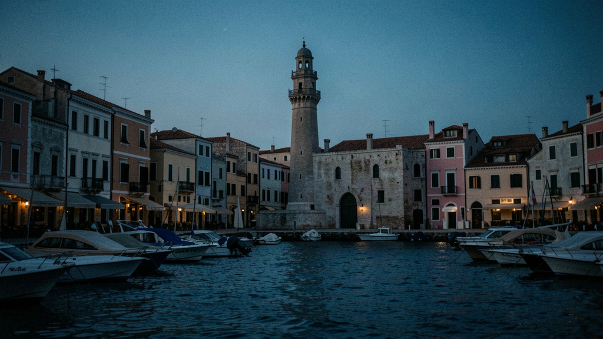
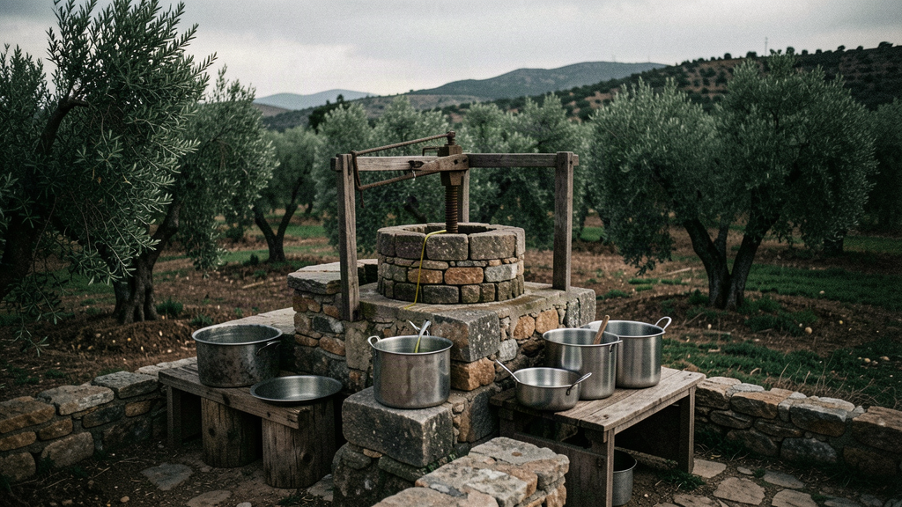
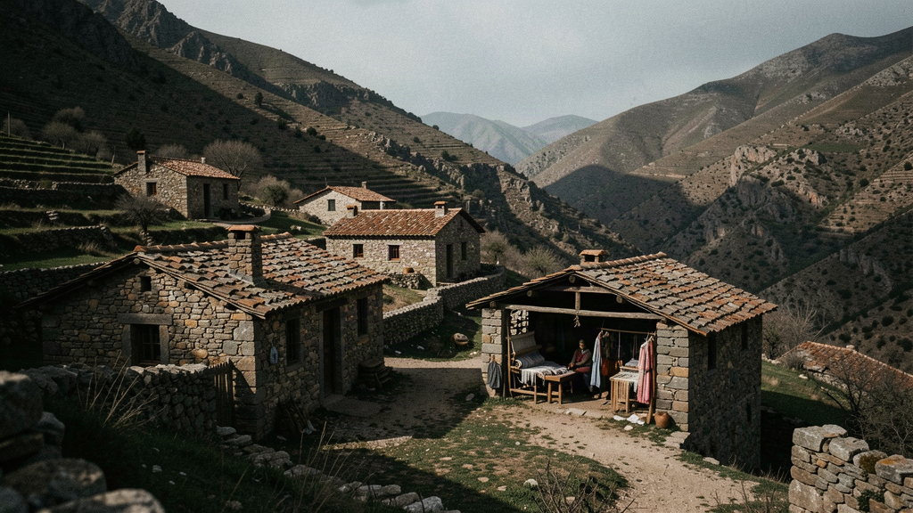
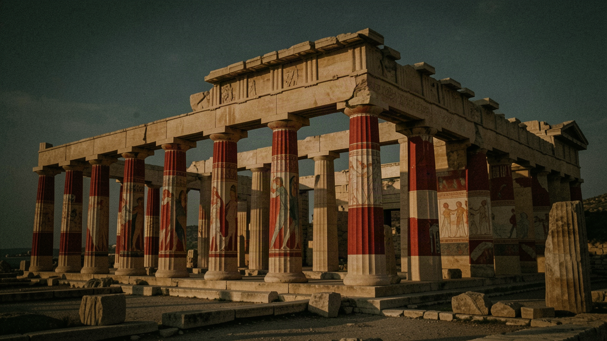
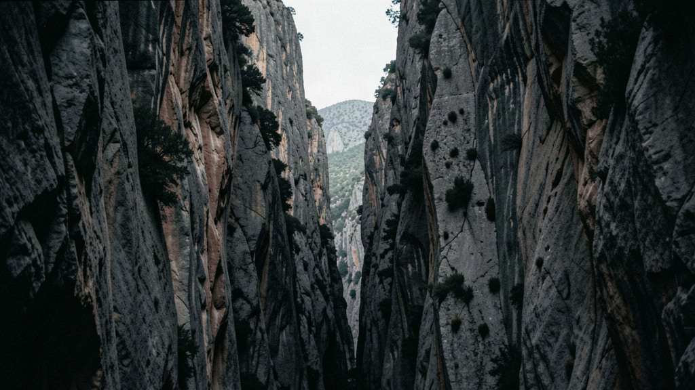
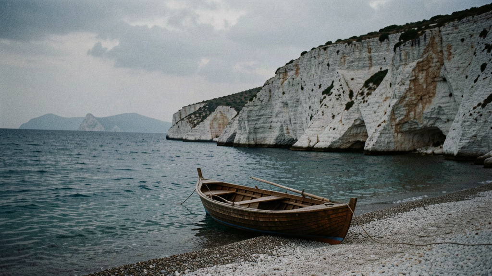
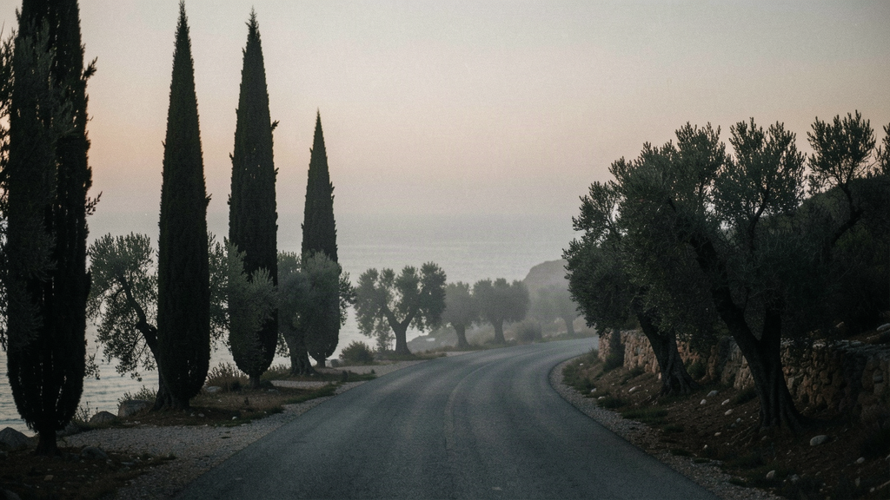

Greece · Late spring
Seven nights, your own room, a table of 4–8. Mountain villages, Minoan ruins, and a coast you can still have to yourself.
Seven nights. Your own room. A table of 4–8 matched to you. Expected 2026 / 2027.
Price: £1,950–£2,750 per person, seven nights, own room included. Flights separate. This is a band, not a fixed price — suppliers aren't signed yet, and the first departures are expected in 2026 or 2027. You're not putting money on a date that doesn't exist.

Fly into Chania International Airport "Ioannis Daskalogiannis" (CHQ), 30 minutes from the old town. Manolis meets the group; you're in your own room by midday.
Walk the harbour before it fills: the 16th-century lighthouse, the Mosque of the Janissaries (the oldest Ottoman building on the island, now a café), and the Firkas fortress, where the Greek flag was raised in 1913. End in Splantzia, the old Turkish quarter — quieter than the front.
First table dinner — a meze spread at a Splantzia taverna, introductions, and Manolis talking through the week. Nobody is made to perform. If you'd rather eat and listen, that's fine.

Coffee in the Agora, the 1913 municipal market on Plateia 1866 — cheese, herbs, honey, the smell of the place. Then a 25-minute drive to a family olive mill in the Akrotiri peninsula for a tasting: what good oil actually tastes like, and why last winter's press still matters in May.
Free. Some swim at Marathi or Seitan Limania (a narrow cove 20 minutes east); others walk the old town's lanes or just sit. Your call.
A raki evening — not a distillation (that's autumn), but a proper tasting of last year's batch, with the food it's meant for. Manolis explains the culture without the romance.

Drive 1h20 to Anogeia, a mountain village on the northern slopes of Psiloritis (Mt Ida), with a history the villagers will tell you themselves. A weaving workshop — Anogeia's rugs are known across Crete — and the square.
Continue south into the White Mountains (Lefka Ori): the road drops through the Amari valley, and if the group wants, a short stop at the Nida plateau turn-off to the Ideon Cave (the cave tied to the Zeus myth, 30 minutes above Anogeia). Back to Chania for dinner.
Dinner in the Topanas district — the Venetian quarter, lantern-lit, mostly locals.

The 2-hour drive east to Knossos, the Minoan palace 5 km south of Heraklion. Manolis walks you through the Throne Room, the frescoes, the storage magazines — what's certain and what's guesswork, stated as such.
Lunch in Heraklion, then the 2-hour drive back along the north coast. Free evening in Chania.
On your own, or a small group at a harbour restaurant. Your room is yours either way.

Pack once; the rest of the week is one stay. Drive south through the White Mountains, with a walk down Imbros Gorge — 8 km, about 2.5 hours, shaded and not technical. The Lefka Ori close around you. The 1h40 route to the coast, with the gorge in the middle.
Continue to Paleochora, on the southwest coast. Check into your own room, then the beach — the long sandy town beach, or five minutes east, the quieter Grammeno.
Table dinner at a seafront taverna in Paleochora. The Libyan Sea is warmer here than the north, even in May.

Boat from Paleochora to Sougia (40 minutes, no road in) or Agia Roumeli at the mouth of the Samaria Gorge — both reachable only by sea. Walk the shore, swim.
Back by mid-afternoon; free time on the Grammeno or Gialiskari beaches.
Last group dinner — a long lunch that ran late, or a quiet fish taverna. Manolis says what's worth coming back for.

Coffee on the water. The 1h40 drive back to CHQ for an afternoon flight, or stay on if your plans allow.
You leave with the group's contacts and, if it worked, a few people you'd actually eat with again.
When a table opens for Greece in Late spring, we'll tell you. One message when there's something real — no newsletter, no hard sell.
Register your interest